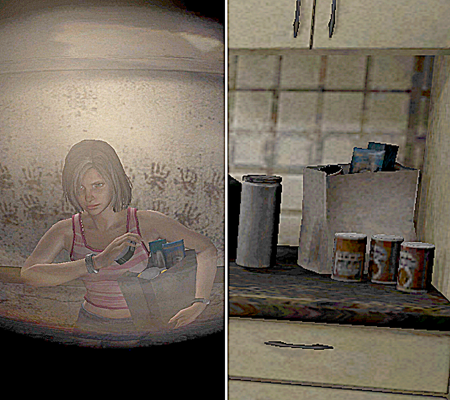
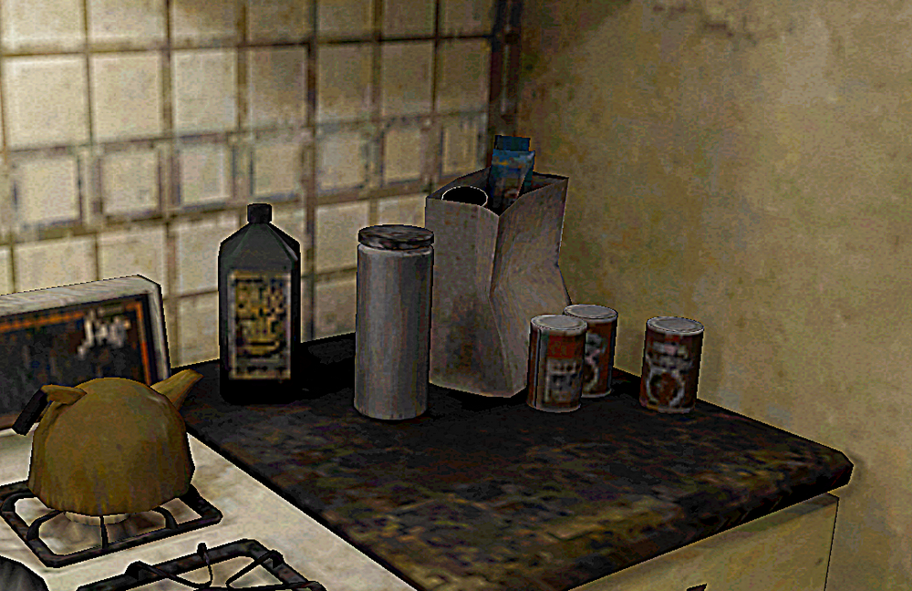
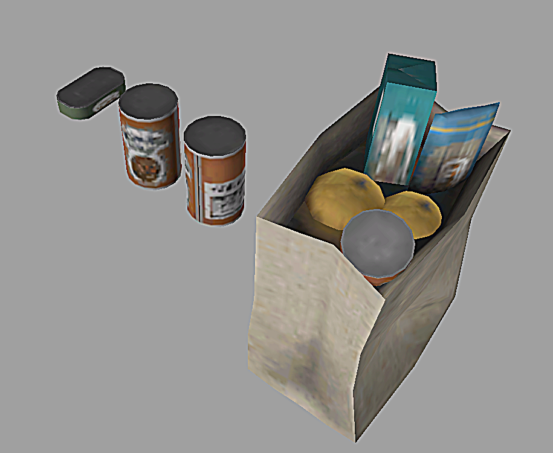
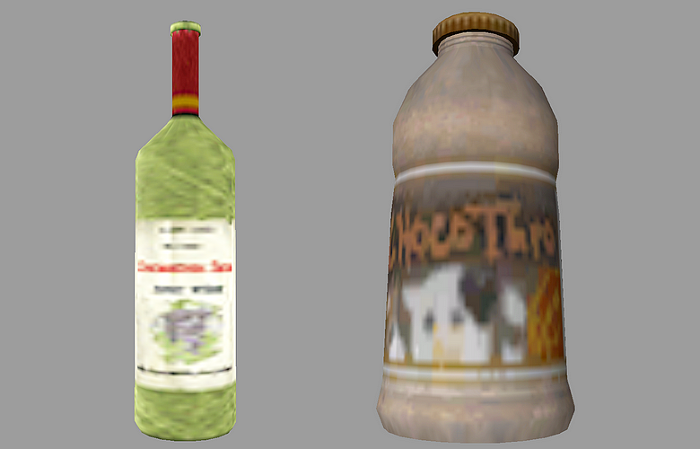
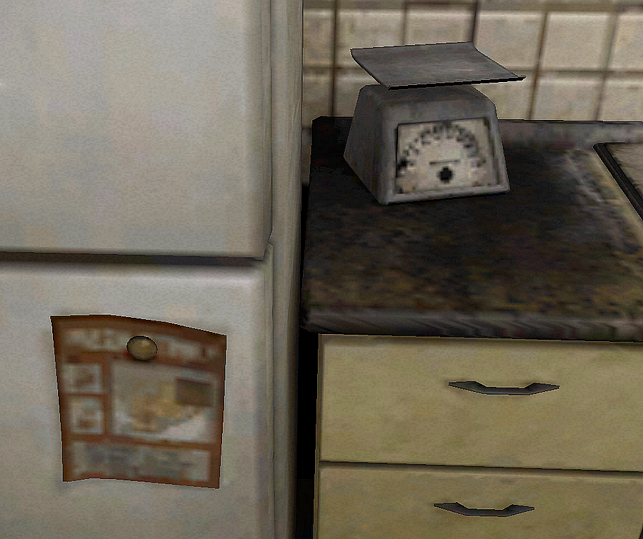
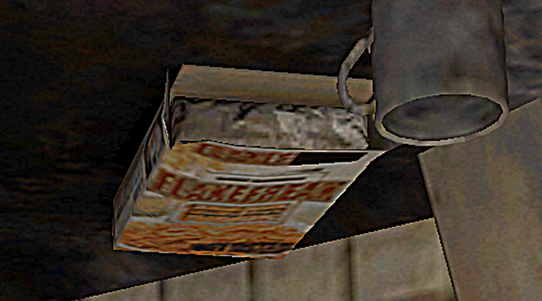
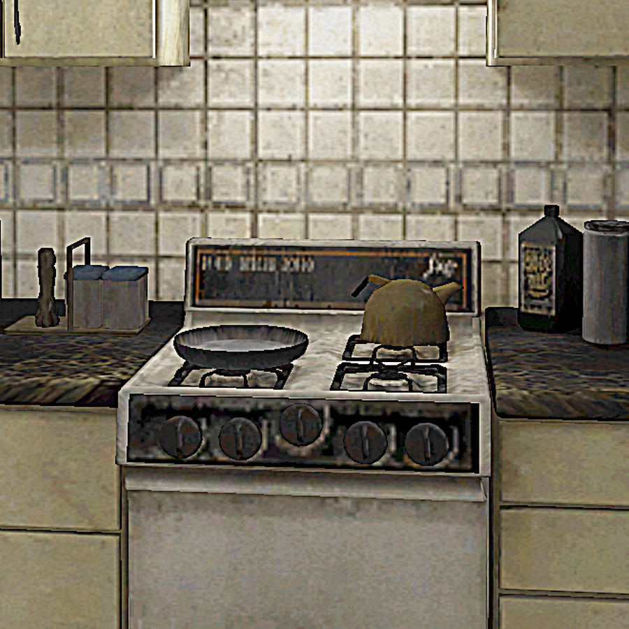
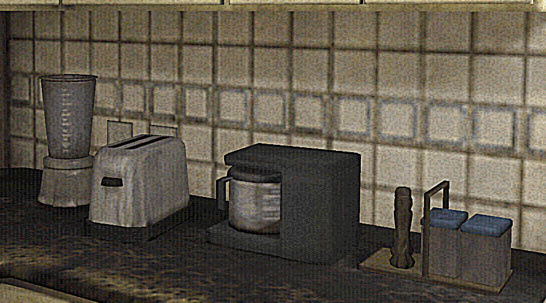
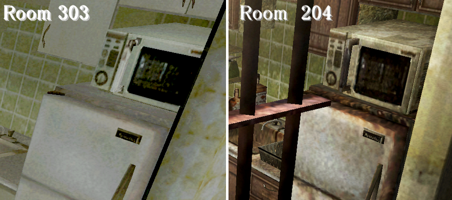
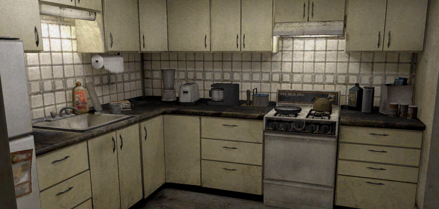

[SH4] Let's Check Out What's in Henry's Kitchen

His Kitchen Actually Has More Stuff Than You'd Expect
This is a mirror of the DeviantArt version linked above, provided as a backup and for easier access.


There's an oil bottle, a can of coffee (maybe), a paper bag, and some canned food at the edge of the kitchen. Henry says, "there are no ingredients in this room" so they might be empty.
A long time ago, I spent a lot of time googling American can designs from around 2004 and guessed that these cans are probably "Campbell's Pork and Beans," which this is based on.
I thought the blue stuff in the back looked like "De Cecco" long pasta. The greenish box behind it is unknown.

So I cheated and looked at the texture file. You can actually see inside the paper bag, there's some pasta, a boxed item, and two yellow bottles. But that green sardine-can-looking thing on the left wasn't in his kitchen, was it?
Actually, it's the same as the paper bag in his kitchen that Eileen is holding. She picks up that sardine can in the very first cutscene, and it doesn't seem to appear in Henry's kitchen. The yellow bottles, too, might not even be in his paper bag.
That red can she'd picked up before was the same one. Probably just a reused texture, but I'll imagine they shop at the same store… or maybe it was just on sale?
And looking at the texture file this way, the ingredients drawn on the can also look colorful. I guessed that because "Pork and Beans" are common in the U.S., but in Japan, where this game was made, those cans are actually hard to find. That particular Campbell's flavor isn't sold here either. The closest you can get in Japan is the "Minestrone" can. So maybe it's that instead.

Not to mention the chocolate milk and white wine in the fridge.


There are also some items like what's probably a pizza delivery flyer and a box of "FLAKEFREAK" cereal.

On the right side of the stove, there's a big bottle of oil, and on the left side, a salt and sugar container along with a bottle of coarsely ground pepper. There's also a scale next to the sink, so it seems like he usually does some cooking.

And, next to the coffee maker, there's a pop-up toaster and a blender, which could be called the two major appliances that are a pain to clean.
He might be the kind of person who's diligent about cooking.
But since he said he hasn't touched the books on his bookshelf in two years, they might be covered in dust by now...

Meanwhile, Eileen's room and Room 204 have a microwave, but his room doesn't. I really respect anyone who can live without a microwave.
